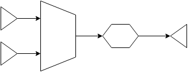
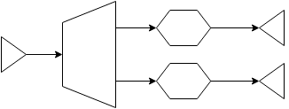

Rivers

Data Stream Processing API for GO
Overview
Rivers provide a simple though powerful API for processing streams of data built on top of goroutines, channels and the pipeline pattern.
err := rivers.From(NewGithubRepositoryProducer(httpClient)).
Filter(hasForks).
Filter(hasRecentActivity).
Drop(ifStarsCountIsLessThan(50)).
Map(extractAuthorInformation).
Batch(200).
Each(saveBatch).
Drain()With a few basic building blocks based on the Producer-Consumer model, you can compose and create complex data processing pipelines for solving a variety of problems.
Building Blocks
A particular stream pipeline may be built composing building blocks such as producers, consumers, transformers, combiners and dispatchers.
Stream 
Streams are simply readable or writable channels where data flows through asynchronously. They are usually created by producers providing data from a particular data source, for example files, network (socket data, API responses), or even as simple as regular slice of data to be processed.
Rivers provide a stream package with a constructor function for creating streams as follows:
capacity := 100
readable, writable := stream.New(capacity)Streams are buffered and the capacity parameter dictates how many items can be produced into the stream without being consumed until the producer is blocked. This blocking mechanism is natively implemented by Go channels, and is a form of back-pressuring the pipeline.
Producers
Asynchronously emits data into a stream. Any struct implementing the stream.Producer interface can be used as a producer in rivers.
type Producer interface {
Produce() stream.Readable
}Producers implement the pipeline pattern in order to asynchronously produce items that will be eventually consumed by a further stage in the pipeline. Rivers provides a few implementations of producers such as:
rivers.FromRange(0, 1000)rivers.FromSlice(slice)rivers.FromData(1, 2, "a", "b", Person{Name:"Diego"})rivers.FromFile(aFile).ByLine()rivers.FromSocket("tcp", ":8484")
A good producer implementation takes care of at least 3 important aspects:
- Checks if rivers context is still opened before emitting any item
- Defers the recover function from rivers context as part of the goroutine execution (For more see
Cancellationtopic) - Closes the writable stream at the end of the go routine. By closing the channel further stages of the pipeline know when their work is done.
Lets see how one would go about converting a slice of numbers into a stream with a simple Producer implementation:
type NumbersProducer struct {
context stream.Context
numbers []int
}
func (producer *NumbersProducer) Produce() stream.Readable {
readable, writable := stream.New(len(producer.numbers))
go func() {
defer producer.context.Recover()
defer close(writable)
for _, n := range producer.numbers {
select {
case <-producer.context.Closed:
return
default:
writable <- n
}
}
}()
return readable
}The code above is a complaint rivers.Producer implementation and it gives the developer full control of the process. Rivers also provides an Observable type that implements stream.Producer covering the basic 3 aspects mentioned above that you can use for most cases: producers.Observable.
Our producer implementation in terms of an observable would then look like:
func NewNumbersProducer(context stream.Context, numbers []int) stream.Producer {
return &Observable{
Capacity: len(numbers),
Emit: func(emitter stream.Emitter) {
for _, n := range numbers {
emitter.Emit(n)
}
},
}
}Consumers
Consumes data from a particular stream. Consumers block the process until there is no more data to be consumed out of the stream.
You can use consumers to collect the items reaching the end of the pipeline, or any errors that might have happened during the execution.
It is very likely you will most often need a final consumer in your pipeline for waiting for the pipeline result before moving on.
Rivers has a few built-in consumers, among them you will find:
Drainerswhich block draining the stream until there is no more data flowing through and returning any possible errors.Collectorscollect all items that reached the end of the pipeline and any possible error.
Say we have a stream where instances of Person are flowing through, then you can collect items off the stream like so:
type Person struct {
Name string
}
diego := Person{"Diego"}
borges := Person{"Borges"}
items, err := rivers.FromData(diego, borges).Collect()
// items == []stream.T{Person{"Diego"}, Person{"Borges"}}
item, err := rivers.FromData(diego, borges).CollectFirst()
// item == Person{"Diego"}
item, err := rivers.FromData(diego, borges).CollectLast()
// item == Person{"Borges"}
var people []Person
err := rivers.FromData(diego, borges).CollectAs(&people)
// people == []Person{{"Diego"}, {"Borges"}}
var diego Person
err := rivers.FromData(diego, borges).CollectFirstAs(&diego)
var borges Person
err := rivers.FromData(diego, borges).CollectLastAs(&diego)Transformers
Reads data from a particular stream applying a transformation function to it, optionally forwarding the result to an output channel. Transformers implement the interface stream.Transformer
type Transformer interface {
Transform(in stream.Readable) (out stream.Readable)
}There are a variety of transform operations built-in in rivers, to name a few: Map, Filter, Each, Flatten, Drop, Take, etc...
Basic Stream Transformation Pipeline: Producer -> Transformer -> Consumer
Aiming extensibility, rivers allow you to implement your own version of stream.Transformer. The following code implements a filter in terms of stream.Transformer:
type Filter struct {
context stream.Context
fn stream.PredicateFn
}
func (filter *Filter) Transform(in stream.Readable) stream.Readable {
readable, writable := stream.New(cap(in))
go func() {
defer filter.context.Recover()
defer close(writable)
for {
select {
case <-filter.context.Closed():
return
default:
data, more := <-in
if !more {
return
}
if filter.fn(data) {
writable <- data
}
}
}
}()
return readable
}Note that the transformer above also takes care of those 3 aspects mentioned in the producer implementation. You could use this transformer like so:
stream := rivers.FromRange(1, 10)
evensOnly := func(data stream.T) bool {
return data.(int) % 2 == 0
}
filter := &Filter{stream.Context, evensOnly}
evens, err := stream.Apply(filter).Collect()In order to reduce some of the boilerplate, rivers provide a generic implementation of stream.Transformer that you can use to implement many use cases: transformers.Observer. The filter above can be rewritten as:
func NewFilter(fn stream.PredicateFn) stream.Transformer {
return &Observer{
OnNext: func(data stream.T, emitter stream.Emitter) error {
if fn(data) {
emitter.Emit(data)
}
return nil
},
}
}
evens, err := rivers.FromRange(1, 10).Apply(NewFilter(evensOnly)).Collect()Combiners
Combines two or more streams into a single stream. Combiners may apply different strategies such as FIFO, Zip, etc.
Combining Streams: Producers -> Combiner -> Transformer -> Consumer

Dispatchers
Forwards data from a particular stream to one or more streams. Dispatchers may dispatch data conditionally such as the rivers Partition operation.
Dispatching to multiple streams: Producer -> Dispatcher -> Transformers -> Consumers

Examples
evensOnly := func(data stream.T) bool { return data.(int) % 2 == 0 }
addOne := func(data stream.T) stream.T { return data.(int) + 1 }
data, err := rivers.FromRange(1, 10).Filter(evensOnly).Map(addOne).Collect()
fmt.Println("data:", data)
fmt.Println("err:", err)
// Output:
// data: []stream.T{3, 5, 7, 9, 11}
// err: nil